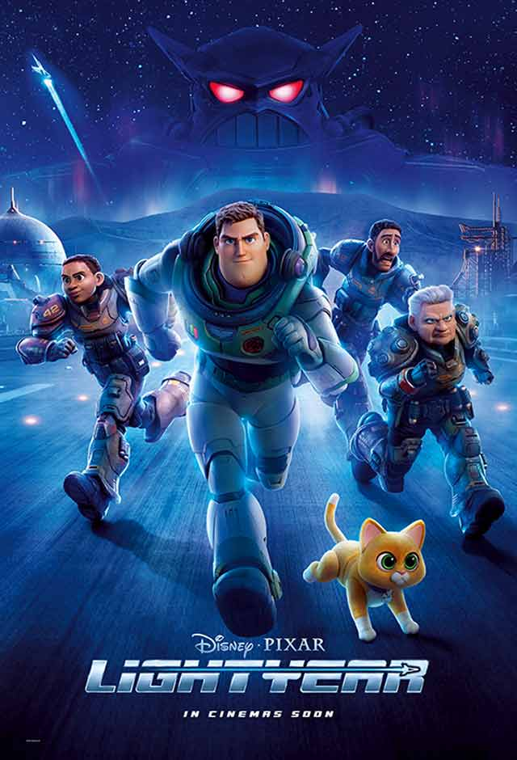

Jurassic Word
Quatro anos após os acontecimentos de Jurassic World 2 - Reino Ameaçado (2018), em que uma conspiração distribuiu espécies de dinossauros geneticamente modificadas pelo mundo, os humanos precisam aprender a dividir o planeta com as criaturas mais temíveis e lendárias de todos os tempos, ressignificando a própria existência e fugindo de perigos constantes que ameaçam a civilização.

Lightyear
Lightyear acompanha o lendário patrulheiro espacial após ser abandonado em um planeta hostil a 4,2 milhões de anos-luz da Terra ao lado de sua comandante e sua equipe. Enquanto Buzz tenta encontrar um caminho de volta para casa através do espaço e tempo, um grupo de recrutas ambiciosos e o encantador gato-robô de companhia, Sox, se juntam ao herói. Para complicar a situação, Zurg, uma presença imponente, e seu exército de robôs impiedosos chegam no planeta com um compromisso misterioso.

30/06/22
Minions 2 - A Origem de Gru
O pequeno Gru era um tremendo fã do super grupo de vilões Vicious 6. Seu sonho, era fazer parte dessa turma malvada e ele se achava pronto para isso. Quando o líder da gangue acaba expulso, surge a possibilidade de Gru tentar uma entrevista, mas a turma debochou dele. Foi o bastante para ele se vingar do grupo e tornar-se inimigo mortal deles. Agora, Gru cumpriu seu objetivo na escala da maldade, está na mira dos seus ídolos do passado, e ao lado dos inseparáveis minions, ele viverá uma tremenda aventura.

07/07/22
Thor - love Thunder
Thor está em uma jornada diferente de tudo que ele já enfrentou, a busca pela paz interior. Mas sua aposentadoria é interrompida por um assassino galáctico conhecido como Gorr, o Carniceiro dos Deuses, que busca a extinção dos deuses. Para combater a ameaça, Thor pede a ajuda do Rei Valquíria, Korg e da ex-namorada Jane Foster que, para a surpresa de Thor, inexplicavelmente empunha seu martelo mágico, Mjolnir, sendo a Poderosa Thor. Juntos, eles embarcam em uma angustiante aventura cósmica para descobrir o mistério da vingança de Gorr e detê-lo antes que seja tarde demais.
Elvis
A trama explora a vida e a música de Elvis Presley, visto através do prisma de sua complicada relação com seu empresário, Tom Parker.
A história mergulha na complexa dinâmica entre eles, que se estende por mais de 20 anos, desde a ascensão do músico até seu estrelato completo.
Uma peça central para essa jornada é Priscilla Presley, sua esposa de 1967 a 1973.

21/07/22
O Telefone Preto
Um garoto de 13 anos, é sequestrado por um sádico serial killer em um porão a prova de som, onde os gritos do menino não podem ser ouvidos. Na parede do porão, Finney encontra um telefone antigo. Quando o aparelho toca, o garoto consegue ouvir a voz das vítimas anteriores do assassino, e elas tentam evitar que o Finney sofra o mesmo destino.

21/07/22
Os Amores de Anãis
Anaïs é uma mulher francesa de 30 anos que está completamente falida e mantém um relacionamento sério com um cara que acredita não amar mais.
Tudo muda quando ela conhece Daniel, que se apaixona perdidamente por ela. No entanto, o homem é casado com Emilie, por quem Anaïs também cria sentimentos.

21/07/22
Pluft
Fantasmas têm medo de gente e as pessoas têm medo de fantasmas. Certo dia, a menina Maribel conhece um fantasminha medroso chamado Pluft, que mora em uma ilha deserta, dentro de um castelo que esconde um tesouro.
Mas eles se separam quando Maribel é sequestrada pelo pirata Perna de Pau, que deseja as riquezas escondidas. Para vencer o pirata, Pluft e Maribel precisarão superar o medo que têm um do outro.
Aos nossos Filhos
Vera foi uma corajosa ativista na época da diratura militar e possui muitos traumas do passado. Atualmente está divorciada e mora com os filhos e enteados em uma grande casa.
Sua filha Thania leva uma vida mais tranquila e está esperando o primeiro filho, fruto de um relacionamento de 15 anos com outra mulher. Juntas, elas entenderão a beleza de fazer parte de uma família contemporânea.

28/07/22
DC liga dos Superpets
Krypto (Dwayne Johnson) é o cão de estimação do Superman (John Krasinski) e também possui superpoderes extraordinários. Apesar disso, ele tem dificuldade para socializar com os outros animais.
Quando seu dono entra em apuros, Krypto precisa reunir um grupo de bichos resgatados para deter o mal. Agora todos vão desfrutar de poderes inusitados e formar uma bela amizade.

28/07/22
Um Héroi
Rahim é um pai que está na prisão devido a uma dívida do passado que não pôde pagar.
Ao ganhar uma licença de dois dias para sair do presídio, ele tenta convencer o seu credor a retirar a queixa sobre uma das partes do pagamento.
No entanto, as coisas não correm conforme planejado por Rahim. Agora resta ele agir com o plano B.

28/07/22
X - A marca da morte
Em 1979, um grupo de jovens cineastas se propôs a fazer um filme adulto na zona rural do Texas, mas quando seus solitários e idosos anfitriões os pegam em flagrante, o elenco se vê lutando por suas vidas.
Além da lenda
O filme traz a história dos folclores brasileiros para a telas de cinema do Brasil. Uma vez por ano, a cada Dia do Saci, 31 de Outubro, também conhecido como "Dia das Bruxas", é revelado o livro sagrado que reúne todas as lendas do Brasil. Mas nessa data de Saci/Halloween, outros seres místicos de outros países vem para o país, onde pretendem roubar o livro e as lendas.
Gêmeo Maligno
Após as consequências de um trágico acidente que tirou a vida de um de seus gêmeos, o casal de pais Rachel e Anthony se muda para o outro lado do mundo com único filho sobrevivente.
O que começa como uma vivência tranquila na zona rural, logo toma um rumo sinistro quando Rachel começa a desvendar a verdade torturante sobre seu filho e confronta as forças sobrenaturais que estão tentando se apoderar dele.
O Lendário Cão Guerreiro
O cachorro Hank tem o sonho de ser um samurai, porque está cansado de sofrer nas mãos de outros animais poderosos da cidade.
Para atingir seus objetivos, ele pede ajuda ao gato Jimbo, que no passado foi um grande guerreiro, mas agora está falido e precisa de uma nova oportunidade.
Agora Hank e seu novo mentor formarão uma aliança para deter os inimigos.